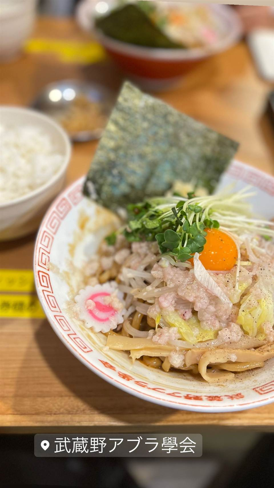
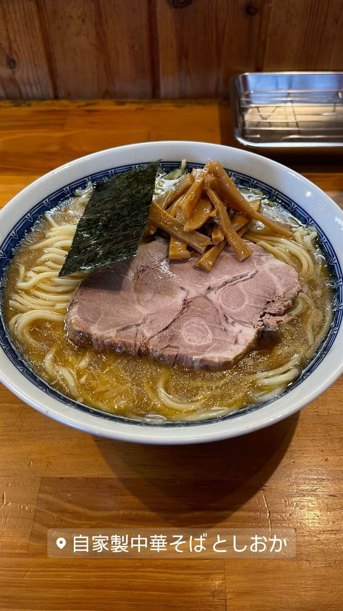

★ また行きたいまぜそば・油そばで20位
武蔵野アブラ學会 早稲田総本店
早大生に長年愛される無限ライス付きの油そば
武蔵野アブラ學会
武蔵野アブラ學会は、油そば発祥の地とされる武蔵野地域で青春時代を過ごした仲間たちが2010年に早稲田で開いた油そば専門店。極太麺に濃厚ダレを絡めた一杯が看板で、早稲田大学生に長年愛される「学生の思い出の味」となっている。
TRIVIA
豆知識
- 早大生が選ぶ「ワセメシランキング」で例年上位に入る
- 無限ライスのおかわりが無制限
REVIEWS
世間の評判
89.9ラーメンDB
濃厚ダレの極太麺とかいわれの相性
- 極太麺が濃いめの醤油ダレや魚介ダレとよく絡み食べ応えがあると評価されている
- かいわれ大根のトッピングが良いアクセントになっていると評価されている
- 早大生の利用が多く混み合うため開店直後の来店を勧める声もある
ラーメンデータベース 口コミ35件・最新 2026-08
| 創業 | 2010年創業（早稲田、2025年で15周年） |
|---|---|
| 系譜 | 油そば発祥の地とされる武蔵野地域で青春を過ごした仲間たちが、武蔵野のソウルフード「油そば」を広めようと創設。 |
| 看板 | 油そば |
| こだわり | 極太麺に濃厚な自家製ダレを絡めて食べる油そば。無限ライスなどサービスも充実。 |
| どこから | 都心 |
| 行くなら | 行列 |
| 予算 | 昼 ～¥999 夜 ～¥999 |
| 場所 | 早稲田 東京都新宿区西早稲田1-18-12 |
| メモ | 早稲田大学生に人気で、ランチ時は50人超の行列になることもある。 |
食べたもの：油そば
NEARBY
近い店・同じ系統の店
-
 ★
まぜそば・油そば 本郷三丁目
中華蕎麦にし乃
メニューは2種類のみ、生姜香る肉厚ワンタン入りの中華そば
昼 ¥1,000～¥1,999 夜 ¥1,000～¥1,999
★
まぜそば・油そば 本郷三丁目
中華蕎麦にし乃
メニューは2種類のみ、生姜香る肉厚ワンタン入りの中華そば
昼 ¥1,000～¥1,999 夜 ¥1,000～¥1,999
-

★ 醤油・中華そば 早稲田駅 自家製中華そば としおか べんてんで12年修行、製麺機を譲り受けた中華そば 昼 ¥1,000～¥1,999 夜 ¥1,000～¥1,999 -
 ★
まぜそば・油そば 亀戸駅
しののめヌードル
淡海地鶏と干し椎茸出汁、手もみ自家製麺の油そば
昼 ¥1,000～¥1,999 夜 ¥1,000～¥1,999
★
まぜそば・油そば 亀戸駅
しののめヌードル
淡海地鶏と干し椎茸出汁、手もみ自家製麺の油そば
昼 ¥1,000～¥1,999 夜 ¥1,000～¥1,999
-
 ★
まぜそば・油そば 亀戸
DURAMENTEI（ドゥラメンテイ）
白醤油と黒醤油、選べる2種スープと自家製ワンタン
昼 ¥1,000～¥1,999 夜 ¥1,000～¥1,999
★
まぜそば・油そば 亀戸
DURAMENTEI（ドゥラメンテイ）
白醤油と黒醤油、選べる2種スープと自家製ワンタン
昼 ¥1,000～¥1,999 夜 ¥1,000～¥1,999
-
 ★
まぜそば・油そば 稲荷町
さんじ
豪州でお好み焼き店を営んだ店主の自家焙煎煮干しラーメン
昼 ～¥999 夜 ¥1,000～¥1,999
★
まぜそば・油そば 稲荷町
さんじ
豪州でお好み焼き店を営んだ店主の自家焙煎煮干しラーメン
昼 ～¥999 夜 ¥1,000～¥1,999
-
 ★
まぜそば・油そば 東中神
自家製麺 まさき
水の綺麗な昭島を選んで出した二郎系の汁なしまぜそば
昼 ～¥999 夜 ～¥999
★
まぜそば・油そば 東中神
自家製麺 まさき
水の綺麗な昭島を選んで出した二郎系の汁なしまぜそば
昼 ～¥999 夜 ～¥999